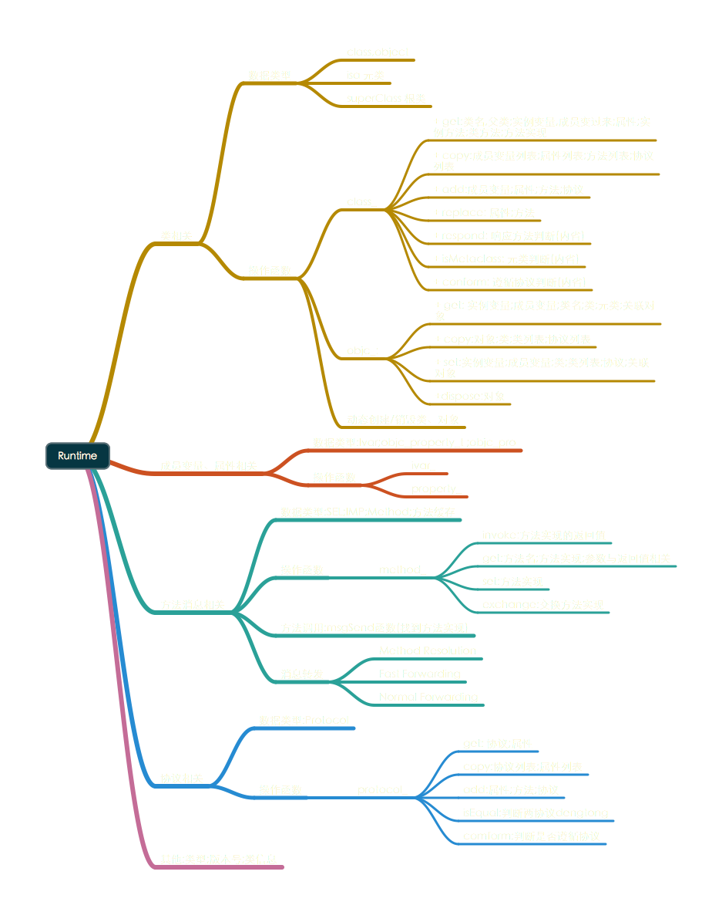
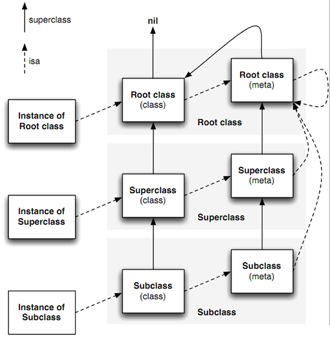

阿斯顿f是阿斯顿f开始搭建f
阿斯顿发送到
阿斯顿f是阿斯顿f开始搭建f
阿斯顿发送到

从C的面向过程到接触OC的对象、消息的过渡初期总会有知其然不知其所以然的纠结，相关的学习资源一般都是介绍有什么、使用步骤一二三四的套路，这样就很难知道知道本质是什么，能干什么不能干什么，为什么要选择用它。而实际开发过程，都是先有什么要解决，再努力找到实现方法。人脑的容易接受的信息，也多是主干到分枝的思维导图，纲举目张。所以，试着以自己的粗浅理解来写一点关于OC类和Runtime的东西。
代码的思想，大概是把重复且不变的东西封装成可以重复利用的共性，把变化的东西细化为具体独立松耦合的变量。这些可以是数据类型，也可以是实现的方法代码片段。类也是封装的产物和可封装的对象。被封装的东西，需要找到里面内容来具体地实现，就需要给里面内容加个关联的映射标识，比如索引（数组）、字符串（字典）、指针、SEL（方法的代号）、isa（对象）等等。大概来说就是用类和对象来封装父类指针和方法列表，用映射来找到实现方法的代码片段。
实例对象由isa指针找到所属类，类维护一个运行时可接收的消息列表；分发表中的每个入口是一个方法(Method)，其中key是一个特定名称，即选择器(SEL)，其对应一个实现(IMP)，即指向底层C实现函数的指针。核心是msgSend函数。
对象就是一个含isa指针的结构体。实例对象的isa指针指向类，类的isa指针指向其元类（metaClass）。
向一个Objective-C对象发送消息时，运行时库会根据实例对象的isa指针找到这个实例对象所属的类。Runtime库会在类的方法列表由super_class指针找到父类的方法列表直至根类NSObject中去寻找与消息对应的selector指向的方法。找到后即运行这个方法。

get: 类名，父类，元类；实例变量，成员变量；属性；实例方法，类方法，方法实现；
1 2 3 4 5 6 7 8 9 10 11 12 13 14 15 16 17 18 19 20 21 | |
copy: 成员变量列表；属性列表；方法列表；协议列表；
1 2 3 4 5 6 7 8 | |
add: 成员变量；属性；方法；协议；(添加成员变量只能在运行时创建的类，且不能为元类)
1 2 3 4 5 6 7 8 | |
replace：属性；方法；
1 2 3 4 | |
SEL又叫选择器，是表示一个方法的selector的指针,映射方法的名字。Objective-C在编译时，会依据每一个方法的名字、参数序列，生成一个唯一的整型标识(Int类型的地址)，这个标识就是SEL。 SEL的作用是作为IMP的KEY，存储在NSSet中，便于hash快速查询方法。SEL不能相同，对应方法可以不同。所以在Objective-C同一个类(及类的继承体系)中，不能存在2个同名的方法，就算参数类型不同。多个方法可以有同一个SEL。 不同的类可以有相同的方法名。不同类的实例对象执行相同的selector时，会在各自的方法列表中去根据selector去寻找自己对应的IMP。
IMP是指向实现函数的指针，通过SEL取得IMP后，我们就获得了最终要找的实现函数的入口.
这个结构体相当于在SEL和IMP之间作了一个映射。有了SEL，我们便可以找到对应的IMP，从而调用方法的实现代码。
1 2 3 4 5 | |
方法调用最先是在方法缓存里找的，方法调用是懒调用，第一次调用时加载后加到缓存池里。（引申：+load方法和+initialize方法。load方法是首次加载类时调用，绝对只调用一次；initialize方法是首次给类发消息时调用，通常只调用一次，但如果它的子类初始化时未定义initialize方法，则会再调用一次它的initialize方法）。
Method Resolution（动态方法解析）： 用所属类的类方法+（BOOL）resolveInstanceMethod:(实例方法)或者+（BOOL）resolveClassMethod:(类方法),在此方法里添加class_addMethod函数。一般用于@dynamic动态属性。（当一个属性声明为@dynamic，就是向编译器保证现在找不到实现，但是会在运行时实现）。
Fast Forwarding （快速消息转发）： 如果上一步无法响应消息，调用- (id)forwardingTargetForSelector:(SEL)aSelector方法，将消息接受者转发到另一个对象（不能为self，否则死循环）。
Normal Forwarding（普通消息转发）： 如果上一步无法响应消息： 调用方法签名- (NSMethodSignature )methodSignatureForSelector:(SEL)aSelector； 如果返回非nil，则创建一个NSInvocation对象封装未被处理的消息，作为参数传递给- (void)forwardInvocation:(NSInvocation )anInvocation。 这一步比较耗时。
最早我把SEL理解为函数指针，现在看来，不是这样的。
SEL类型的变量，可以通过@selector(方法名)来取得，当然了，Objective C的方法名，我们也知道了，多么恶心（比Java废话还多）。 而它真正得到的，只要方法名一样，它的值就是一样的，不管这个方法定义于哪个类，是不是实例方法【再说了，@selector的时候，除了方法名也没有什么类啊，对象啊什么事情】。 所以我现在把它理解为“方法名的某种映射结果”。（从C++程序员的眼光看，我觉得没啥可以对应的，既不是函数指针，也不是函数指针类型，像是函数指针类型的名字吧。）
这个才是函数指针，IMP可以从 对象 & SEL的方法得到：
1
| |
这是IMP的定义： typedef id (*IMP)(id, SEL, ); 另外注意NSObject里面的这两个方法：
1 2 | |
class_addMethod，用就行了，转到定义，可以看看其他的方法，也很动态（这也太动态了，Java，C#也不行啊）。 “定义于runtime.h”
这个方法挺BT的。 我暂时个人理解为方法劫持吧，方法和属性的调用，都会先跑到这里来，具体看文档吧： http://www.apple.com.cn/developer/mac/library/documentation/Cocoa/Conceptual/ObjCRuntimeGuide/Articles/chapter_5_section_2.html
CADisplayLink 是一个定时器对象可以让你的应用以与显示器的刷新界面相同的频率进行绘图。 应用如果想要创建 display link ，需要提供一个目标对象和一个当屏幕刷新时被调用的选择器方法。之后再将 display link 添加到主线程中。 一旦display link与主线程相关联，当屏幕内容需要被刷新的时候目标对象上的选择器方法就会被调用。目标对象可以读取 display link 的时间戳属性去检索下一帧被显示的画面。举个例子，一个执行它自己动画的应用会使用时间戳来确定在哪或者如何去在即将显示的画面中去展示它的对象。duration 属性提供了一个在两个画面之间的间隔时间。你可以在你的应用中使用这个值来估算显示的帧速率，近似下一帧被显示的时间，和调整行为，以便下一帧准备时间显示。 你的应用可以设置 paused 属性为YES来停止通知。同样的，如果你的应用不想用框架所提供的时间，你可以自己选择更慢的帧速率。已提供更慢但是一致的帧速率会比跳帧更加流畅，你可以通过改变 frameInterval 属性来改变改变画面的帧间隔（减少帧速率）。（每几帧调用一次，默认是1，如果是2，对于iOS设备来说那刷新频率就是60HZ也就是每秒60次，如果将 frameInterval 设为2 那么就会两帧调用一次，也就是变成了每秒刷新30次。） 当你的应用想停止 display link ，它应该调用 invalidate 方法去从主线程中移除它并且消除与目标之间的关联。 CADisplayLink 不能被继承。
使用 NSTimer 类创建定时器对象或者仅仅是计时器。一个计时器每隔一定的时间间隔运行，然后触发，发送给目标对象一个特殊的消息。举例来说，你能够创建一个 NSTimer 对象发送给窗口一个消息，告诉它在一定时间间隔之后更新它自己。 定时器的运行需要结合着 run Loop。为了有效的使用一个定时器，你应该注意如何操作 run loops。请搜索在 Xcode Document 中 NSRunLoop 和 Threading Programming Guide 文章。特别注意，run loops 对它们的定时器保持着强引用，所以你不必去对加到 run loop 中的定时器保持强引用。 计时器并不是一个真正的时间机制；它只有在被添加到循环运行模式中的一种的时候才能触发，此时计时器的触发时间一旦过去就能检查出。由于对各种输入源的一个典型run loop 管理，对于一个定时器的时间间隔的有效解决方案被限制在50-100毫秒，如果一个定时器的触发经历了很长的一段时间或者在一个 run loop 的模式下没能监控到计时器，则这个计时器不会触发直到下一次 run loop 再次检测出这个计时器。因此，真正的计时器触发时间可以在预定触发时间之后的很长一段时间之后。可以看看这篇文章 Timer Tolerance。
你可以在创建计时器的时候指定它是可重复的还是不可重复的。一个不可重复的计时器只触发一次然后自动销毁，从而防止计时器再次触发。与之相反，一个可重复的计时器会重复在相同的 run loop 中触发。 一个可重复的计时器总是按照预先设计的触发时间执行它自己，而不是实际的出发时间。举个例子，如果一个计时器将在特定的时间每5秒钟之后触发，预定触发时间将总会落后于开始的5秒时间间隔，即使实际的触发时间被推迟。如果到目前为止触发时间被推迟了很久已经错过了一个或者几个触发的时间点，计时器会在下一个触发周期上只触发一次；触发后计时器重新安排，为下一次触发做准备。
一个定时器对象只能同事被注册在一个 run loop 中，虽然它能被添加到这个 run loop 中的多个 run loop 模式中去。有三种方式创建：
1 2 3 4 5 6 7 | |
1 2 | |
一旦在 run loop 中预设了定时器，定时器就会在制定的时间间隔触发直到它被销毁。一个不重复的计时器会在触发之后自动被销毁。然而，对于一个重复的计时器，你必须调用它的 invaludate 方法来销毁它。调用这个方法会请求在 当前的 run loop 中将计时器移除；所以，你应该总在创建计时器的线程中来调用 invalidate 方法来销毁它。销毁计时器之后会立即让它无效所以不会再影响 run loop。然后在移除方法之前或者晚一点点 run loop 会将计时器移除（与它的强引用一起移除），一旦被移除，计时器对象就不能再使用。 子类注意 不能够继承 NSTimer。
在 iOS 7之后，你能够为定时器指定一个公差。让系统在计时器触发的时候更加灵活的提升优化系统并增加它的存储和响应的能力。计时器会在预定的时间和预定时间加上公差时间之内触发计时器。计时器不会在预定时间之前触发。对于重复计时器为了避免漂移，下次的触发时间是根据原始的触发时间所估算出来而公差只应用于单次的触发时间。默认值是0，意味着没有更多的公差。系统有权利对于一些计算器使用少量的公差而不管公差的属性值是多少。 作为计时器的使用者，也许你有一个对于计时器最合适的公差。一般的经验是对于可重复的计时器设置公差至少有10%的时间间隔。即使少量的公差也将对应用程序产生重大的积极影响。系统可能为公差设置一个最大值。
在Core Foundation框架和 Foundation 框架中有许多种数据类型可以被互换着使用。这种能力，被称为： Toll-Free Bridging，意味着你能够使用相同的数据类型作为 Core Foundation 方法调用的参数也可以作为一个OC 方法传递的接受者。举个例子：NSLocale 相对 Core Foundation 是的互换的类型是 CFLocale。因此，如果一个方法中的参数是 NSLocale* 类型的时候，你可以传递过去一个 CFLocaleRef，并且如果方法中的参数是 CGLocaleRef 参数，你可以传递过去一个 NSLocale 实例。
NSRunLoop 类的声明是对于输入源的面向对象的编程思想。一个NSRunloop 对象处理着来自窗口系统、NSPort 对象和 NSConnection 对象的像鼠标或键盘事件的输入源。一个 NSRunloop 对象也能够处理 NSTimer 事件。 你的应用不能够创建或者显示的管理 NSRunLoop 对象。每个 NSThread 对象，包括应用的主线程，都有一个 NSRunLoop 对象由于需求被自动的创建。如果你需要访问当前线程的 run loop，你可以对 currentRunLoop 类做操作。 注意从 NSRunLoop的角度来看， NSTimer 对象并不是“输入源” - 他们是一种特殊类型，这意味着它们不会在触发的时候引起 run loop 返回。 注意： NSRunLoop 类一般不认为是线程安全的，其方法应该只在其当前的线程上下文中被调用。你不能尝试在别的线程中去调用 NSRunLoop 对象的方法，如果这样做将导致无法预料的结果。 小结 在动画中最好用CADisplayLink，因为由于每秒的刷新频率较高，所以用它所生成的动画会显得非常流畅。
0.导入CoreImage框架
1
| |
1.实例化二维码滤镜
1
| |
2.恢复滤镜的默认属性
1
| |
3.将字符串转换成NSData
1 2 | |
4.通过KVO设置滤镜inputMessage数据
1
| |
5.获得滤镜输出的图像
1
| |
6.将CIImage转换成UIImage，并放大显示
1
| |

1.实例化拍摄设备
1
| |
2.设置输入设备
1
| |
3.设置元数据输出
3.1 实例化拍摄元数据输出
1
| |
3.2 设置输出数据代理
1
| |
4.添加拍摄会话
4.1 实例化拍摄会话
1
| |
4.2 添加会话输入
1
| |
4.3 添加会话输出
1
| |
4.4 设置输出数据类型，需要将元数据输出添加到会话后，才能指定元数据类型，否则会报错
1
| |
5.视频预览图层
5.1 实例化预览图层
1 2 3 | |
5.2 将图层插入当前视图
1 2 | |
6.启动会话
1
| |
1 2 3 4 5 6 7 8 9 10 11 12 13 14 15 16 | |

1 2 3 4 5 6 7 8 9 10 11 12 13 | |


1 2 3 4 5 6 7 8 9 10 11 12 13 14 15 16 17 18 19 20 21 22 23 24 25 26 27 28 29 30 31 32 | |
1 2 3 | |
UITextField *textField默认的情况 1.只能显示一行文字 2.有占位文字
UITextView *textView默认的情况 2.能显示任意行文字 2.没有占位文字
文本输入控件,最终希望拥有的功能 1.能显示任意行文字 2.有占位文字
最终的方案: 1.继承自UITextView 2.在UITextView能显示任意行文字的基础上,增加"有占位文字"的功能
1 2 3 4 5 6 7 | |
1 2 3 4 5 6 7 | |
1 2 3 4 5 6 7 | |

1 2 | |